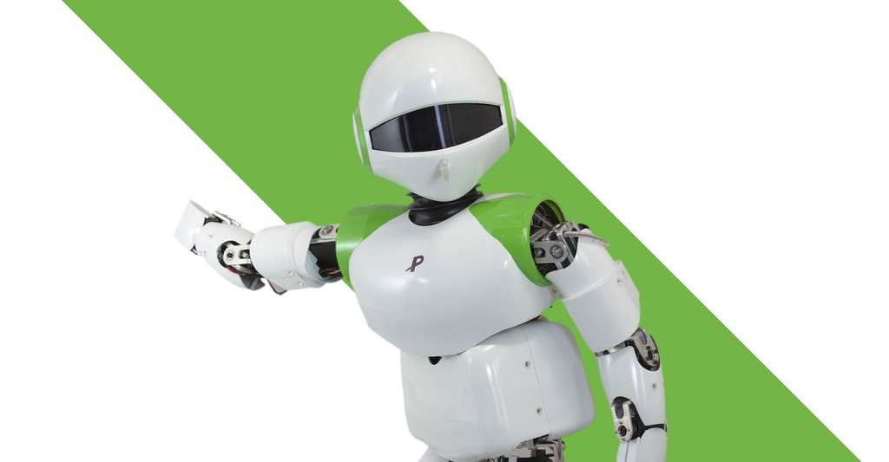

Vidéos aléatoires
Liens utiles


Les robots deviennent intelligents : les sommes investies en recherche pour développer la robotique domestique font du Japon le premier État dans ce domaine. Des humanoïdes seront-ils bientôt à notre service ?
Les recherches en intelligence artificielle ont conduit à une nouvelle génération de robots, que l'on peut qualifier d'humanoïdes. Ils ressemblent aux humains par la forme mais aussi par la perception du milieu environnant et par leurs réactions. Ces robots humanoïdes feront-ils bientôt partie de notre quotidien ? Les robots humanoïdes pourraient bien évoluer couramment à nos côtés. Respecteront-ils alors les trois lois d'Asimov, créées par l'auteur de science-fiction pour calmer les craintes des humains envers la robotique ?
D'autres ont suivi depuis, purement domestiques, comme Pepper, ou plus spécialisés, voire professionnels, comme Leenby, sorte de garde-malade, ou comme ces hôtesses d'accueil qui se multiplient au Japon. Ce dossier vous présente ici ces prémices, pour mieux comprendre une saga qui, probablement, ne fait que commencer.